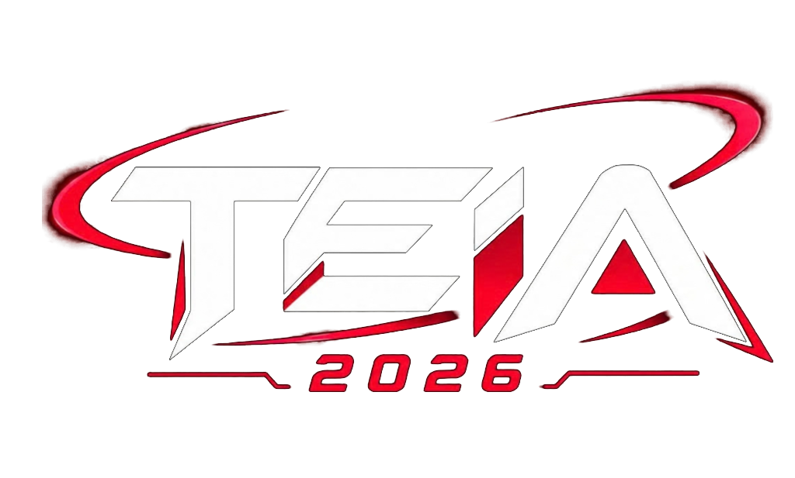

01
CIRCUITO
HARDWARE
Desmontagem, arquitetura de componentes, placas-mãe e montagem de PC ao vivo.
SALA • CORREDOR
→

TECNOLOGIA • EDUCAÇÃO • INOVAÇÃO • APRENDIZAGEM
Toque ou passe o mouse nos monólitos para emitir pulsos diretos ao núcleo neural 3D.
Desmontagem, arquitetura de componentes, placas-mãe e montagem de PC ao vivo.
Portugol Studio, algoritmos executados e o desafio do pensamento lógico.
Controle de carrinhos na pista, motores DC, engrenagens e montagem reversa.
Desenvolva sua primeira aplicação web moderna com apoio de inteligência artificial.
Todo o roteiro planejado para 23 de Outubro de 2026. Selecione o turno para filtrar.
Acolhida calorosa das 4 escolas convidadas, distribuição dos crachás oficiais e entrega dos folhetos informativos com o mapa de atividades.
Boas-vindas da coordenação do curso, apresentação geral da proposta TEIA 2026 e apresentação musical artística de Jaiane.
Momento de coffee break, interação entre os estudantes do 9º ano e a comunidade escolar da EEMTI Maria Alice.
Linha do tempo dos computadores, demonstração dos componentes físicos, painéis de carreira em TI e desmontagem/montagem de computador na prática.
Turmas divididas simultaneamente: Grupo A vivencia Programação & Lógica (Portugol Studio e Desafio da Torre), Grupo B vivencia Robótica e Pista de Carrinhos. Às 11h10 ocorre a inversão das turmas.
Almoço servido a todos os estudantes das 4 escolas convidadas, professores acompanhantes e equipe técnica organizadora.
Exibição do teaser audiovisual e direcionamento dos estudantes para a escolha da oficina prática do período vespertino.
Dois caminhos imersivos: Oficina de Robótica Aplicada ou Oficina de Criação Web com Inteligência Artificial para os visitantes desenvolverem seus próprios projetos.
Pausa revigorante e recarga de energias antes do grande desafio final de encerramento.
Batalha interativa e gamificada de raciocínio, lógica e conhecimentos tecnológicos disputada entre equipes das 4 escolas convidadas.
Entrega de premiações aos vencedores do Desafio TEIA, fotos oficiais da edição 2026, certificação e agradecimento às delegações.
Modelo tridimensional unificado e ajustado em Three.js. Arraste para inspecionar em 360°, role para zoom ou use os botões.
Estudantes do 9º ano que participam das vivências, circuitos práticos e do Desafio TEIA 2026.
Participação ativa das turmas de 9º ano nos circuitos de hardware, código, robótica e na competição regional.
Vivência prática no laboratório com Portugol Studio, eletrônica e nas oficinas de desenvolvimento web com IA.
Contato com a montagem ao vivo de computadores, arquitetura de placas e pilotagem na pista de robôs.
Imersão completa no ambiente técnico profissional e disputa pelo troféu no Desafio TEIA entre escolas.
Acaraú — Ceará • Curso Técnico em Informática. Ambiente de protagonismo juvenil, inovação e acolhida de 120 a 160 visitantes.
Os talentos do Curso Técnico em Informática que conduzem o evento.
Coordenador do Curso Técnico em Informática · EEMTI Maria Alice Ramos Gomes
EEMTI MARIA ALICE RAMOS GOMES · ACARAÚ — CEARÁ